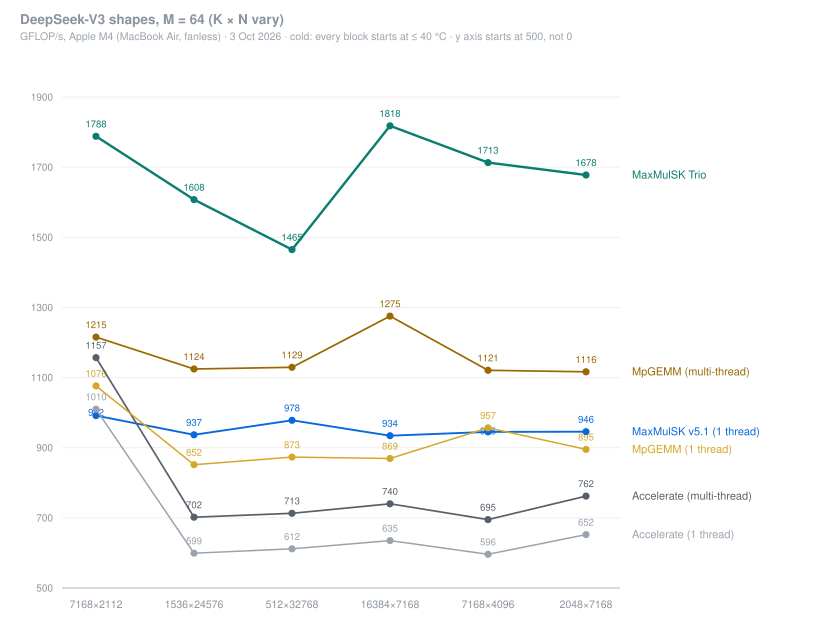
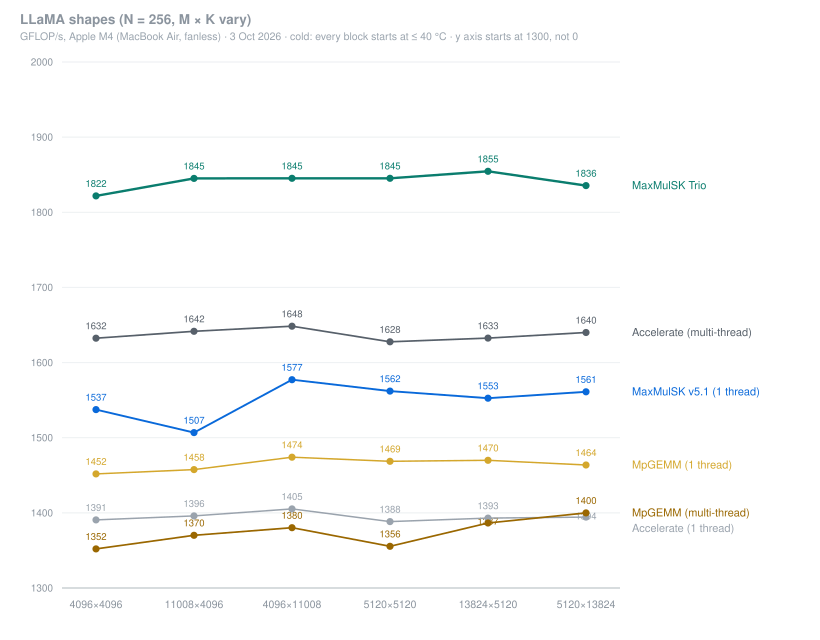
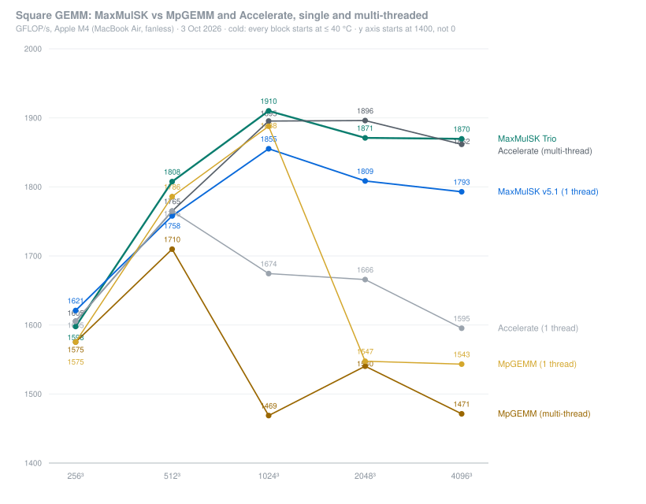

MaxMulSK started as a place to try the fun optimization tricks I learned in one of my courses. It slowly grew into an FP32 GEMM library for the Apple M4 (base model). I've tried a lot of tricks and ideas on these kernels along the way, and Trio and v5.1 are the best ones I've built so far.
Trio is a multi-threaded GEMM kernel, but not in the way you might expect. The base M4 has only one SME unit for its performance cores (the M4 Pro and Max have two), so Trio doesn't split the work across several SMEs. It adds two NEON threads instead, and gives them everything that isn't compute.
Before writing any code, while we were still benchmarking to learn what the M4 does under the hood, I settled on an architecture with two parts: data movement and compute. I wanted to optimize from the inside out: start from the highest end, pure SME compute, and then build everything around it as carefully as possible. That's how the NEON cores ended up with all the packing and data movement. As you can see above, the NEON threads bring A and B from memory into L2, transpose A, and fill small rings that the SME reads from. (The SME packs only the very first piece itself, to get going while the NEON threads wake up.) The SME does nothing but compute, so it can run at its limit.
We got these numbers from a night-long cold benchmark on a MacBook Air with the base M4 (fanless). Cold means we let the CPU cool down between compute-heavy parts, so every library runs at the highest clock it can: every measurement block started with the CPU at or below 40 °C, and we checked the SME clock after every run and threw out anything that had throttled. We chose this to see each kernel's full potential, and to find bottlenecks without having to filter out clock, heat and other noise.



A cold benchmark shows potential really well, but in real use you rarely get a cooldown between computations, so heat matters too. We're working on a sustained benchmark for that. The shapes are classic squares, the DeepSeek-V3 and LLaMA shapes from the MpGEMM project, and a few LLM-shaped ones of our own, to see how the kernels behave across sizes and use cases (LLM, HPC and so on). All 35 shapes are on the GitHub page.
One SME thread that does nothing but compute, and two NEON threads that keep it fed. Same math as v5.1 down to the last bit, written with intrinsics only, no assembly.
sme/trio on GitHub →The single-thread kernel, and the base Trio is built on. Packing is moved out of the compute loops, B is packed inside A's transpose in one pass, and ZA goes straight to C. Works on any shape.
sme/v5 on GitHub →Everything lives on GitHub: the code, how to build and call it, all 35 shapes and the design notes. A detailed write-up is on the way.